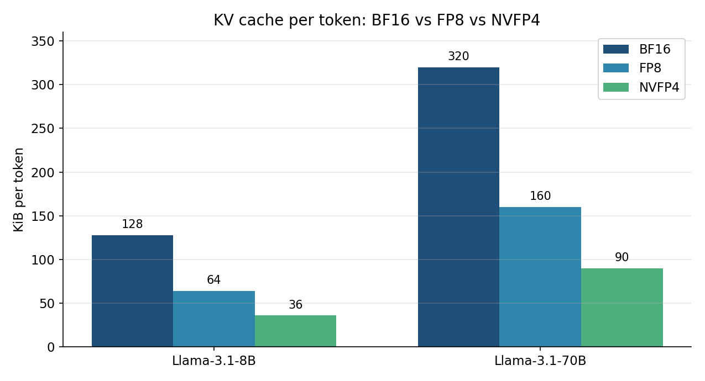
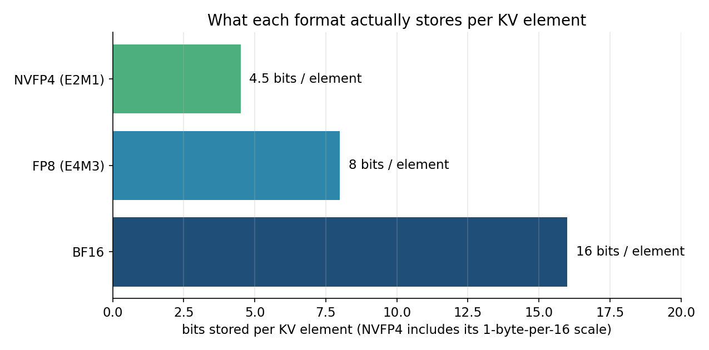
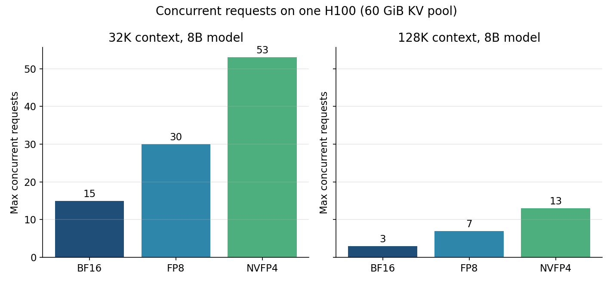
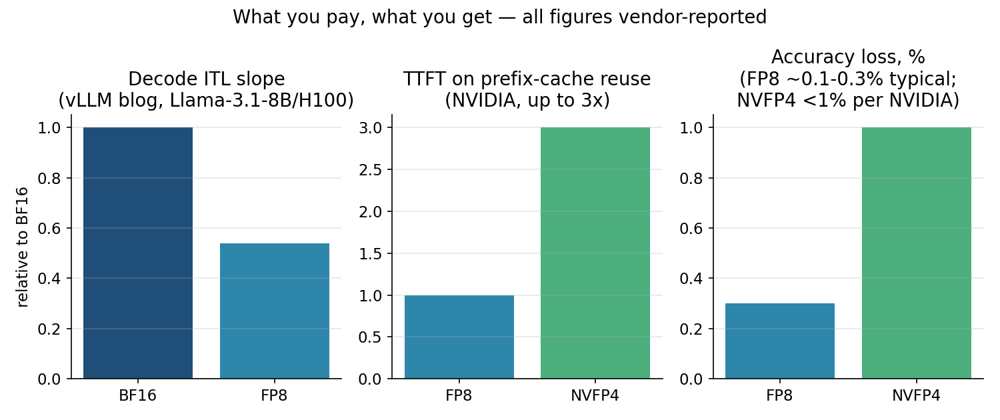

Your model weights are fixed. Your KV cache is not — it grows with every token, every user, every second of context. On a long-context deployment the KV cache is the thing that decides how many users fit on one GPU, and in vLLM 0.32 it got a lot smaller: FP8 KV cache is now a one-flag production default, and NVFP4 KV cache — previously Blackwell-only — now runs on Ampere and Hopper too. The hook is the arithmetic, and it is blunt: a Llama-3.1-70B request at 128K context needs 40 GiB of KV cache in BF16, 20 GiB in FP8, and 11.25 GiB in NVFP4. On one H100, an 8B model at 128K context goes from 3 concurrent users to 13 by changing one flag. That is not a micro-optimisation. That is a capacity decision.
The ELI5 version
Think of the KV cache as the model's short-term memory. Every token you have already processed leaves two notes — a key and a value — so the model does not have to re-read the whole conversation to write the next word. The notes are written in a precise handwriting (BF16, 16 bits per number). FP8 is the same notes written in a coarser handwriting (8 bits): half the paper, still legible, because attention averages out small rounding errors. NVFP4 is shorthand (4 bits) plus a tiny conversion table per 16 notes, so the shorthand stays readable. The model still reads the same notes — it just needs a quarter of the shelf space.
The memory arithmetic: one formula, three numbers
The KV cache stores one key vector and one value vector per token, per layer, per KV head. Its size per token is therefore:
bytes/token = 2 × layers × KV heads × head dim × bytes per element
BF16 stores 2 bytes per element, FP8 stores 1, and NVFP4 stores 0.5 bytes for the value plus a 1-byte FP8 scale shared by each 16-element block — 0.5625 bytes per element effective. The companion notebook computes the whole table; here is the version that matters:

Two things to notice. First, the 70B numbers are the ones that hurt: a single 128K-context request in BF16 eats half an 80 GB H100 just for KV, before the 140 GB of weights are even counted (which is why 70B serving is a multi-GPU game in the first place). Second, NVFP4's advantage is not 4x — it is 3.56x, because the scale factors are real bytes. Anyone quoting "4-bit = quarter the memory" is forgetting the scales.
What each format actually stores

NVFP4 is NVIDIA's microscaling format: each value is E2M1 (1 sign bit, 2 exponent bits, 1 mantissa bit), grouped into 16-element micro-blocks, each block carrying its own FP8 (E4M3) scale factor, plus a second-level FP32 scalar per tensor. The block scale is the whole trick — a single global scale would drown in the KV cache's outliers (a few attention heads carry values orders of magnitude larger than the rest), while per-element scales would cost more than the values. Sixteen elements per scale is the compromise NVIDIA landed on, and it is why the format holds up at 4 bits where naive INT4 falls apart.
FP8 KV is simpler: E4M3, one scale per tensor or per attention head. Per-head scales are the accurate option, but they need the FlashAttention backend and calibration through llm-compressor — per-tensor is the zero-config default, and for most workloads it is enough.
What changed in vLLM 0.32
vLLM 0.32.0, released October 18, 2026, widened NVFP4 KV cache support from Blackwell (SM100) to SM8x (Ampere, including A100) and SM90 (Hopper, including H100 and H200) — PR #46963 for SM8x/SM12x, PR #60620 for SM90 — plus XQA decode support on SM12x and an FP8 KV default for GLM-5.x models on SM100. Before 0.32, --kv-cache-dtype nvfp4 had a paged write path only on SM100, so the flag simply did not work on the GPUs most people actually rent.
The practical consequence: the 4-bit KV cache is no longer a Blackwell marketing slide. If you are serving on H100s or A100s on vLLM 0.32 or later, you can measure it today:
python -m vllm.entrypoints.openai.api_server \
--model meta-llama/Llama-3.1-8B-Instruct \
--kv-cache-dtype nvfp4 \
--gpu-memory-utilization 0.90 \
--max-model-len 131072
FP8 is the same one-flag change (--kv-cache-dtype fp8), and it works on H100 and A100 alike. One caveat on A100: it has no hardware FP8 tensor cores, so vLLM stores the KV in FP8 and dequantizes to BF16 before attention. You still get the memory reduction — the concurrency win — but no throughput gain from the quantization itself. On Hopper, the FP8 path is hardware-native.
Concurrency is the number that pays
Memory per token is abstract. Users per GPU is a bill. Take an 8B model on one H100: BF16 weights take ~16 GiB, leaving roughly a 60 GiB KV pool at 90% memory utilization. How many 128K-context users fit?

At 128K context, NVFP4 serves 4.3x the concurrent users of BF16 on the same card. At 32K it is 3.5x. Note the shape: the win grows with context length, because the KV cache is a larger share of the memory at long context. If your workload is short prompts, the flag barely matters; if it is long-context agents, it is the cheapest capacity you will ever buy.
What you pay, and what breaks

The measured trade-offs, with sources:
- Decode gets faster, not just smaller. The vLLM blog's April 2026 stress test of
--kv-cache-dtype fp8(e4m3) across Hopper and Blackwell found the decode inter-token-latency slope drops to ~54% of BF16 for Llama-3.1-8B on H100, with break-even around ~7k tokens — below that, the dequantization overhead roughly cancels the bandwidth win. The blog's conclusion: FP8 KV is "ready to be the default starting point for many long-context deployments." - Prefill reuse gets much faster. NVIDIA's own NVFP4 KV benchmark found up to 3x better time-to-first-token on prefill with KV cache reuse, because the smaller cache means more prefixes stay resident and more requests hit them. That is a second-order win: the format does not just fit more, it reuses more.
- Accuracy costs under 1%. NVIDIA reports under 1% accuracy loss across code-generation, knowledge, and long-context benchmarks for NVFP4 KV. DeepSeek-R1-0528 quantized to NVFP4 stays within ~1% of FP8 across MMLU-Pro, GPQA, and LiveCodeBench at ~2.3x higher throughput. GLM-5.x, which defaults to FP8 KV on SM100, sees a 2.3–5.5% throughput gain at a 7–11% TTFT cost — the TTFT cost is the one number that goes the wrong way, and it is worth measuring on your own workload.
And the guard rails, which are not optional:
- Head size 64 is refused. PR #46963 explicitly refuses NVFP4 KV with head dimension 64, where it reports misreads of 10–15%, and with attention sinks. vLLM refuses these combinations at backend selection, before weights load — but only if you are on a version that has the check. The companion notebook includes a config guard that encodes the whole support matrix; run it before you deploy.
- Per-head FP8 scales need calibration. The accurate FP8 path needs the FlashAttention backend and calibration through llm-compressor. Per-tensor scales are free and usually fine; if your long-context evals regress on FP8, per-head calibrated scales are the first thing to try, not a bigger GPU.
- Measure your own evals. Every accuracy figure above is the vendor's or the format author's own measurement, on their hardware, on their benchmarks. The format is cheap to try — one flag, one A/B against your own long-context eval set — and that measurement is the only one that counts for your deployment.
The decision ladder
- Serving long context on Hopper or Ampere, vLLM ≥ 0.32: start with
--kv-cache-dtype fp8. It is the safe default — halves memory, faster decode past ~7k tokens, negligible accuracy cost. - Context ≥ 32K and you need more concurrency: measure
--kv-cache-dtype nvfp4against your own evals. If accuracy holds within your budget, it is 4.3x the concurrency of BF16 at 128K. - On vLLM < 0.32, or head_dim 64, or attention sinks: stay on FP8 (or BF16) until you upgrade — NVFP4 is refused or unavailable, and the refusal is there for a reason.
- Short prompts only: skip both. Below ~7k tokens the decode win vanishes, and you are adding a quantization step for nothing.
The KV cache was always the capacity bottleneck in long-context serving — Part 2 of this lane showed why memory, not FLOPs, caps concurrency. FP8 and NVFP4 do not change the formula. They change the constant, by 2x and 3.56x. And in serving, the constant is the bill.
Takeaways
- KV bytes per token = 2 × layers × KV heads × head dim × bytes per element. FP8 halves it; NVFP4 cuts it to ~28% of BF16 (the scales are real bytes).
- A 70B request at 128K context: 40 GiB BF16, 20 GiB FP8, 11.25 GiB NVFP4. An 8B model on one H100 goes from 3 concurrent 128K users to 13.
- vLLM 0.32 widened NVFP4 KV from Blackwell-only to Ampere and Hopper (PRs #46963, #60620). FP8 KV is one flag on any Hopper/Ampere card.
- The accuracy bill is small (<1% per NVIDIA) but the guard rails are real: no head_dim 64, no attention sinks, per-head FP8 scales need calibration — and every figure above is vendor-reported, so measure your own evals before you deploy.
Honesty note: all benchmark and accuracy figures in this post are the cited sources' own reported results (vLLM blog April 2026, NVIDIA's NVFP4 KV benchmark writeup, PR #46963/#60620, DeepSeek-R1 NVFP4 evaluation) — not independently measured. The 4.3x concurrency figure and the memory arithmetic are computed in the companion notebook from the published formula. No Meta content, per standing exclusion.
Companion notebook: kv_fp8_nvfp4.ipynb — KV memory arithmetic, concurrency table, decode break-even toy model, and a config guard encoding the vLLM 0.32 support matrix. All cells exec-tested.